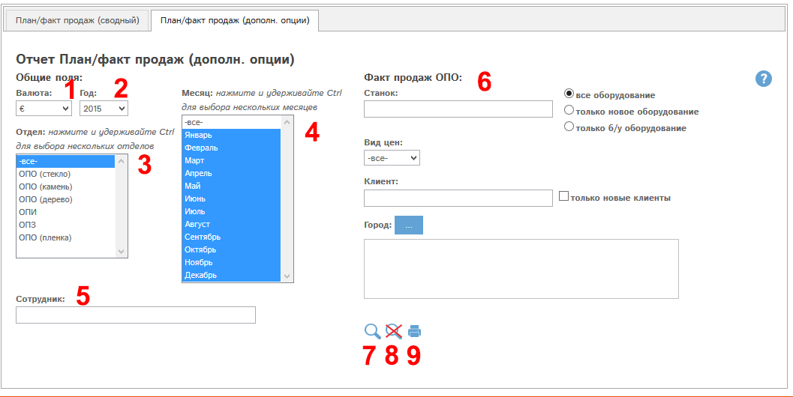
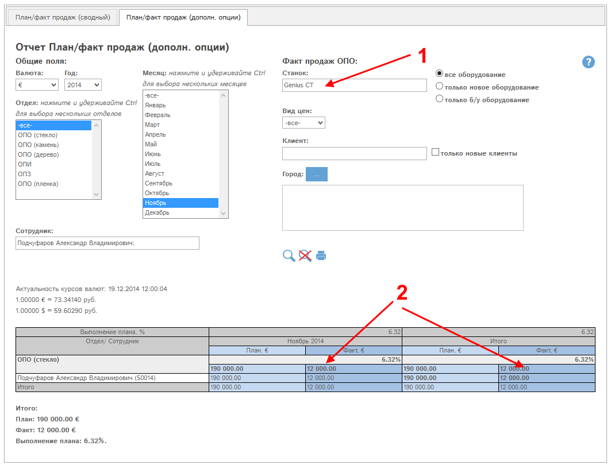

Отчет является расширением отчета "План/факт продаж (сводный)" и позволяет анализировать данные плана/факта продаж с дополнительной фильтрацией по договорам из раздела "Договора и приложения". Эти договора составляют величину факта продаж у отделов ОПО стекло, камень, дерево.
Рассмотрим форму отчета:

Рис. Отчет План/факт продаж (дополнительные опции).
(1) – валюта: выбор валюты, в которой формируется отчет.
(2) - год: выбор года
(3) - Отдел: выбор в отчет одного, либо нескольких, либо всех отделов компании
(4) - месяц: выбор в отчет данных по одному, нескольким, либо всем месяцам выбранного в поле (1) года.
(5) - сотрудник: выбор данных по одному или нескольким сотрудникам.
(6) - блок фильтров "Факт продаж ОПО" - позволяет фильтровать в отчет значения факта продаж для отделов ОПО по полям договоров из раздела Договора и приложения:
- наименование станка
- новое/не новое/все оборудование
- вид цен
- клиент
- только новые клиенты
- город
(7) – кнопка  («найти») - осуществляет формирование
отчета по указанным параметрам в фильтрах (1)-(5) .
(«найти») - осуществляет формирование
отчета по указанным параметрам в фильтрах (1)-(5) .
(8) – кнопка  («сбросить все фильтры») – сбрасывает все
параметры фильтров (1)-(5), формирует отчет согласно общей логике.
(«сбросить все фильтры») – сбрасывает все
параметры фильтров (1)-(5), формирует отчет согласно общей логике.
(9) – кнопка  («печать») – производится печать отчета
согласно параметрам фильтров (1)-(5).
(«печать») – производится печать отчета
согласно параметрам фильтров (1)-(5).
Пример.
Получим данные плана/факта продаж по менеджеру Подчуфаров за ноябрь 2014 г, станок Genius CT. Начнем набирать в поле "Сотрудник" Подчуфаров, программа предложит во всплывающем меню вариант "Подчуфаров Александр Владимирович", подставим его. Выберем год 2014 и месяц ноябрь. Впишем в блоке фильтров (6) наименование станка Genius CT и нажмем  :
:

Рис. Отчет План/факт продаж: поиск по сотруднику, станку.
В графу Факт продаж (2) попадают только суммы договоров на станок Genius CT (1).